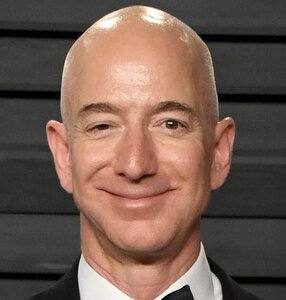
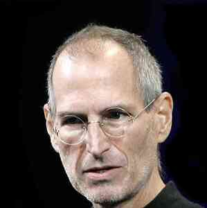

Mark Zuckerberg es un empresario y programador estadounidense, conocido principalmente por ser el cofundador y CEO de Facebook. Nació el 14 de mayo de 1984 en White Plains, Nueva York. Desde muy joven mostró un gran interés y habilidad por la programación y la informática. En 2004, mientras estudiaba en la Universidad de Harvard, Zuckerberg lanzó la red social Facebook junto con sus compañeros de clase Eduardo Saverin, Andrew McCollum, Dustin Moskovitz y Chris Hughes. Lo que comenzó como un proyecto universitario se convirtió rápidamente en una de las plataformas sociales más populares y exitosas del mundo. Con el tiempo, Zuckerberg ha logrado convertir a Facebook en una de las compañías más influyentes y valiosas del mundo. Bajo su liderazgo, la red social ha crecido enormemente, adquiriendo otras plataformas como Instagram y WhatsApp. Además, Zuckerberg ha sido un defensor de la innovación y la tecnología, invirtiendo en proyectos de inteligencia artificial y realidad virtual. |
Larry Page nació el 26 de marzo de 1973 en Michigan, Estados Unidos. Desde joven, mostró un gran interés por la tecnología y la informática. Estudió en la Universidad de Stanford, donde conoció a Sergey Brin. Sergey Brin nació el 21 de agosto de 1973 en Moscú, Rusia. Su familia emigró a Estados Unidos cuando era niño. Al igual que Page, Brin siempre tuvo una pasión por la tecnología y la ciencia. También estudió en la Universidad de Stanford, donde se encontró con Page. En 1996, Page y Brin comenzaron a colaborar en un proyecto de investigación llamado "BackRub", que se centraba en el análisis de la estructura de los enlaces en la web. Este proyecto se convertiría en la base de lo que más tarde sería conocido como el motor de búsqueda de Google. En 1998, Page y Brin fundaron oficialmente Google, con la misión de organizar la información mundial y hacerla accesible y útil para todos. La compañía rápidamente se convirtió en un éxito y revolucionó la forma en que la gente busca y encuentra información en internet. Larry Page se desempeñó como CEO de Google desde su fundación hasta 2001, luego nuevamente desde 2011 hasta 2015. Durante su tiempo al frente de la empresa, se enfocó en expandir la gama de productos y servicios de Google, incluyendo el desarrollo de Android, el sistema operativo móvil más utilizado en el mundo. Sergey Brin, por su parte, se desempeñó como presidente de tecnología de Google y supervisó la innovación y desarrollo de nuevos productos. También estuvo involucrado en proyectos como Google Glass, un dispositivo de realidad aumentada. |
Jeff Bezos es un empresario estadounidense y fundador de Amazon, la compañía de comercio electrónico más grande del mundo. Nació el 12 de enero de 1964 en Albuquerque, Nuevo México. Bajo su liderazgo, Amazon se ha convertido en una de las empresas más exitosas y valiosas del mundo. Bezos es conocido por su enfoque en la innovación y la satisfacción del cliente. También es filántropo y ha lanzado el "Fondo Bezos Day One" para apoyar proyectos educativos y ayudar a las personas sin hogar. En 2021, anunció que dejaría su puesto como CEO de Amazon, pero seguirá involucrado como presidente ejecutivo. |
 |
|  | Steve Jobs fue un empresario y magnate estadounidense, conocido principalmente por ser el cofundador y presidente ejecutivo de Apple Inc. Nació el 24 de febrero de 1955 en San Francisco, California. A lo largo de su vida, Jobs dejó un impacto significativo en la industria de la tecnología, liderando la introducción de productos innovadores que cambiaron la forma en que interactuamos con la tecnología, como el iPod, el iPhone y el iPad. Su enfoque en el diseño y la simplicidad, combinado con su visión de "pensar diferente", le valió el reconocimiento y admiración de millones de personas en todo el mundo. Aunque falleció en 2011, su legado y su influencia continúan siendo fuertes en la industria y en la cultura popular |
Linus Torvalds es un ingeniero de software finlandés ampliamente reconocido por su creación del sistema operativo Linux en 1991. Su contribución al desarrollo del software libre ha tenido un impacto significativo en la industria informática a nivel mundial. Bajo el liderazgo de Torvalds, Linux se ha convertido en uno de los sistemas operativos más utilizados en servidores, computadoras de escritorio y dispositivos móviles. Torvalds decidió liberar el código fuente de Linux bajo la licencia GPL , lo que permitió a otros desarrolladores colaborar y mejorar el sistema, fomentando el movimiento del software libre. Esta filosofía de compartir y colaborar ha llevado a un rápido crecimiento de la comunidad de desarrolladores de Linux, que continúa impulsando la evolución y mejora del sistema. Además de su trabajo en Linux, Torvalds también es conocido por crear Git, un sistema de control de versiones distribuido ampliamente utilizado en el desarrollo de software. Git ha revolucionado la forma en que los equipos de desarrollo gestionan y colaboran en proyectos de software, brindando una mayor eficiencia y control sobre el seguimiento de cambios y versiones. |
 |
 |
Bill Gates, nacido el 28 de octubre de 1955 en Seattle, Washington, es un empresario y programador estadounidense. Es conocido como el cofundador de Microsoft y por su papel en la revolución de la computación personal. Gates lideró el desarrollo del sistema operativo MS-DOS y lanzó el exitoso sistema operativo Windows. Además de su éxito empresarial, Gates es un destacado filántropo y fundador de la Fundación Bill y Melinda Gates, que trabaja para mejorar la educación y la salud globalmente. |